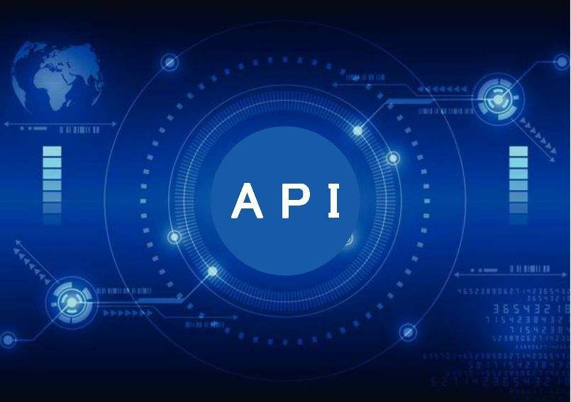

0x01 前言
越权漏洞相较于SQLInject、XSS、SSRF等漏洞，最大的不同点在于该漏洞和权限的架构设计具有强相关性，而权限的架构设计又强依赖业务属性，这就导致了几乎每个系统的权限架构都各不相同，自动化检测的难度非常之大，误报率非常高；内部的检测准确率无法有效提升，越权漏洞数量就很难有效的下降
关于越权漏洞的挖掘，从原理上来看并不复杂，甚至可以说是简单，最大的难点在于信息收集能力、细心程度、对业务的理解度，这个其实也没有什么好谈的
关于批量/自动化越权检测的文章在网路上寥寥无几，开源的工具更是少的可怜（某些大佬手里有牛逼工具除外），今天想要说的是在甲方，特别是应用数量三位数、四位数以上的甲方，在面对大量API时的越权漏洞检测思路探讨
0x02 越权风险类型
越权漏洞的分类及定义在[1]这个笔记里说的已经很详细了，在这里就不赘述了
未授权访问
水平越权
垂直越权
除了上边说的三类权限漏洞，结合业务场景，一般会将权限分为两类
- 功能性权限/菜单权限
- 用户有没有权限访问这个功能/菜单
- 数据性权限
- 用户有没有权限访问其它用户的数据
0x03 检测方式
一个应用，可能只需要一两个小时就可以测试完成；十个应用，顶多也就一周；那一百个呢？一千个呢？
每天又会有几百个应用产生迭代，新增的API呢？
实际上一家几千人的互联网公司，负责应用安全的同学往往只有两到三个，API会有几千几万个
所以这里我们从黑盒、白盒、自动化、半自动的思路来探讨一下越权漏洞的解法
I. 黑盒+自动化
主要分给两个关键部分
- 流量采集
- 服务器出口日志采集
- 测试环境日志采集
- 请求重放
- 多个账号重放请求
- 结果对比
- 排除误报
优点：在理想情况下，可以通过很少的人力去覆盖大量应用
缺点：大量的误报，安全产品死于误报；线上真实流量重放效果最好，却容易造成故障
II. 黑盒+半自动化
这种方式一般会尝试和测试团队合作，在测试环境里进行，或者安全工程师进行单个系统测试时使用，像ZTO的authcheck、BurpSuit插件AuthMatrix等差不多都是类似的思路
- 流量采集
- 浏览器被动代理或爬虫方式采集
- 请求重放
- 多个账号重放请求
- 对response进行简化
- 人工确认
- 对简化后的response进行判断是否存在漏洞
优点：最后输出的漏洞结果准确度较高，适合针对单一系统进行安全测试
缺点：在面对大量应用及大量迭代新增API时，效率太低
III. 白盒+自动化
这种方式有两种思路，一种是发现存在越权风险的接口，一种是发现不存在越权风险的接口，原理是差不多的
- 白盒扫描
- 入参是否包含可越权(可遍历)的参数
- 是否有从cookie或session中或获取用户标识
- 风险确认
- 是否包含authcheck(xxid, userid)的判断逻辑
- 是否包含@authcheck的注解
优点：仿佛看到了可以批量发现越权风险的方法，对于一些简单的水平越权可以有效发现，而且一般一个系统的权限缺陷都是相似的，发现一个，发现一片
缺点：误报率太高，不能发现复杂的越权风险
IV. 白盒+半自动化
这种思路和上面提到的”黑盒+半自动化“的思路差不多
- 白盒扫描
- 扫描器应用的API list（可参考我上一篇文章[2]）
- 标明入参及用户标识、判断逻辑
- 人工确认
- 通过白盒扫描出来的入参、用户标识、判断逻辑来判断是否存在越权风险
优点：对一部分水平越权、未授权访问的风险可以有效发现
缺点：API数量一多就不灵光了，很难发现复杂的越权
0x04 简单思考
上边扯了这么一堆越权漏洞的检测方法，但其实并没有解决上边提出的问题
上千个应用、几万个接口，每天新增上百个，如何去解？存量呢？新增呢？
在以前，我还经常会去给开发们做一些安全培训，但是效果呢？只有少数开发能真正认识到越权的严重性，效果并不乐观，该出现的漏洞一个都没少，并且效果无法衡量
做应用安全也有几年的时间了，现在所谓的"安全运营"也越来越多人提了，那我们是运营吗？是也不是，我更喜欢称自己为“技术运营”，用技术来解决运营的困境，这个愿望是好的，扯皮的事情总是少不了的
回到越权漏洞的问题，每次做安全众测，都会爆出来一堆越权的问题，不乏之前出现类似漏洞的应用，然后就会有人跳出来问，你们之前复盘的action落实了吗？为什么还会出现？balabala，这些问题我又何尝不是经常问自己，到底是为什么？这段时间和教父也经常在讨论这些问题，那么问题出在哪里了呢？
先说一下我的思考结论，越权漏洞的解法是”流程+工具(监控)+覆盖度+蛮力“
- 流程
- 举个例子，当SRC上报了一个越权漏洞过来，开发完成修复，然后进行复盘(出现这个问题的根本原因是什么？其它API会存在吗)，开发领了排查同类API的action回去，排查完成后，安全工程师核查开发同学的排查结果，形成闭环
- 工具(监控)
- 工具这个范围就很广了，在我看来，无论是开源的还是自己开发的工具都像是一块块积木，将它们通过合适的方式组合起来，才能发挥出最大的效果；而不是为了kpi而不停的造轮子，造完一个来年再造一个
- 针对增量的API，建立完善的监控体系
- 覆盖度
- 这个点是最关键的一个点，你会发现，每次出事的点都是你没有覆盖到的，对资产的熟悉程度，对API的监控完整度都非常重要
但这个也不是我真正想表达的点，因为按照上边的说法，还是要搞一套类SDL的东西出来，API那么多，人就这么两三个，到年底又变成PPT上代码了，第二年问题照旧
虽说在这类风险的解决上没有一招鲜的讨论，但是我觉得真正需要去做的是逐个点打穿，一步步的去收敛风险；将一个个点打穿，才能真正的解决问题，而不是浮于表面，看起来大而全，实则只不过是徒有其表；没有流程、技术支撑的东西我是不信的，不要再提什么宣导啥的，没什么用处
例如这个阶段就只做”复盘--开发自查--安全复查--安全挖掘漏洞--复盘”这个闭环，相信用不了半年，就可以对高危应用的风险进行有效收敛
上边没有提“蛮力”这个点，有时候要解决风险，地毯式排查往往是最有效的方法；为什么这么说了，假设现在开始治理越权，那几千几万个存量API怎么处理呢，等扫描器开发完成？这时候可以对API进行分级，识别出其中包含敏感信息的API，这时候就剩几千个了(也是非常庞大的工作量，但是只能硬着头皮上)，对这部分API进行地毯式排查，没有敏感信息的越权，危害还是相对可控的；方式low了点，但效果是有的，同时建立完善的新增接口监控体系，对增量API及时的进行处理;在评审了大量的接口后，归纳总结，对每个业务域的权限架构进行优化(当然这非常困难)，安全接入进去，从根本解决问题（这种方案是笔者现在正在实践的，效果半年后再来写一篇）
现实有时候是骨感的，干活的人没啥增加，每年的kpi都是不断的增长，很难专门拿出一段时间来做存量的攻坚，存量不解决，漏洞永不休
//说了这么多，下班回家脑阔疼，不想调整逻辑了，大家将就着看一下，想表达的观点就一个“找到问题，打穿它，无论用什么方法，有些苦是一定要吃的”。
//还有就是教父说招人一起来搞事情
参考：
[1]https://g.yuque.com/evilm/yuequan/gmqet8?language=en-us
[2]https://mp.weixin.qq.com/s/ATpoEN9QI-D5vkxDimQ8FQ
本文由 蓝骨
创作，采用 知识共享署名4.0 国际许可协议进行许可
本站文章除注明转载/出处外，均为本站原创或翻译，转载前请务必署名
最后编辑时间为: 2020-09-09T19:52:35+08:00